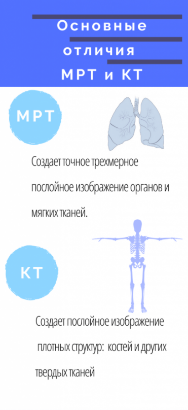
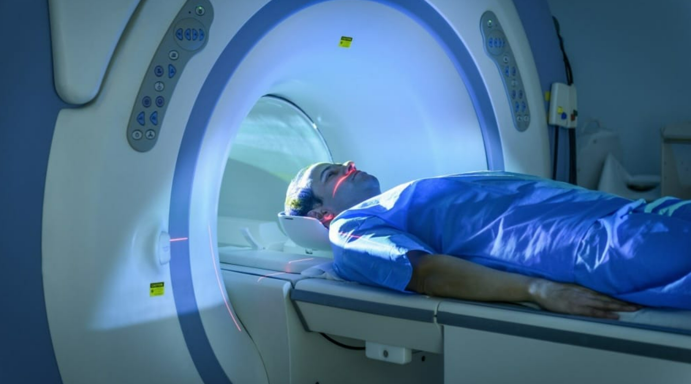
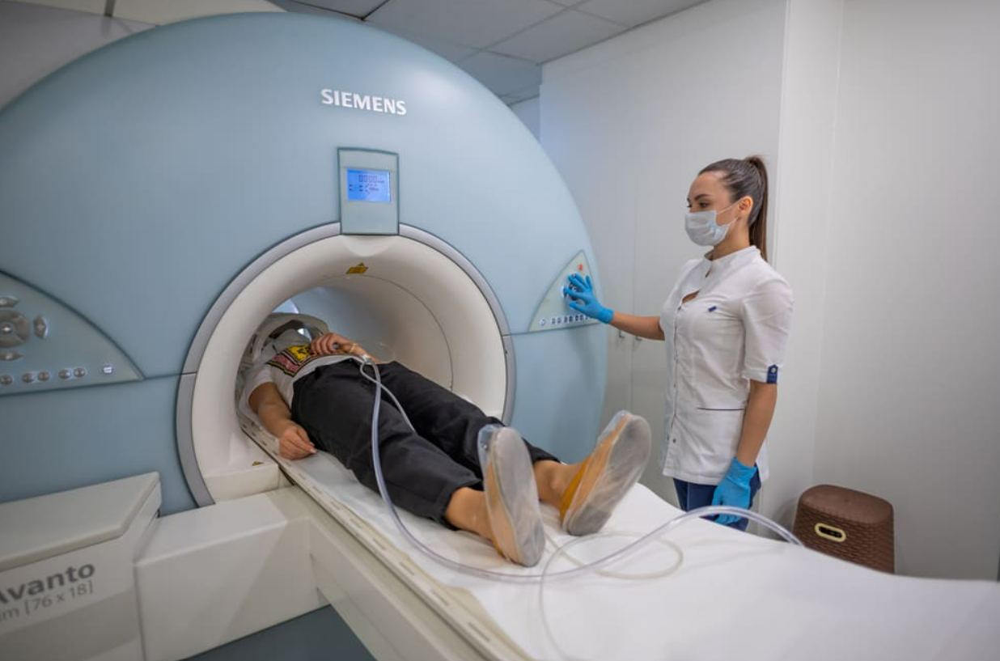

Чем МРТ отличается от КТ и какое исследование более информативно?
На сегодняшний день магнитно-резонансная томография и компьютерная томография ― наиболее информативные и высокоточные методы инструментальной диагностики. Они создают послойное трехмерное изображение внутренних органов и позволяют делать достоверные заключения о процессах, протекающих в организме пациента.
Мельчайшие нарушения в тканях будут отражены на снимке и позволят быстро поставить точный диагноз. При этом МРТ и КТ принципиально различаются как в случаях применениях, так и в методах сканирования.
Основные отличия КТ от МРТ
Обе методики визуализируют патологии организма, но если МРТ дает информацию о состоянии мягких тканей, то КТ в большей степени применяется для оценки здоровья костей и других твердых тканей. Ключевые различия МРТ и КТ очевидны, когда понятны принцип действия аппаратов, природа излучения и показания к назначению.

Принцип действия: метод сканирования
Основная разница между исследованиями заключается в методе сканирования:
- В компьютерном томографе применяются рентгеновские лучи, которые проходят через мягкие ткани и отображают плотные структуры. Таким образом, создаются высокоинформативные точные трехмерные послойные изображения. Лучевая нагрузка при проведении компьютерной томографии существенно ниже, чем при выполнении рентгеновского снимка.
- При магнитно-резонансной томографии также создается точное трехмерное послойное изображение органов и тканей, но за счет резонанса атомов водорода в организме человека на магнитное поле, создаваемое томографом.
Показания к назначению МРТ
Магнитно-резонансная томография применяется для обследования сосудов, мягких тканей, внутренних органов, головного мозга, нервной системы и лимфатических узлов.
- грыжа межпозвоночного диска;
- протрузия;
- протрузия;
- опухоли и воспалительные процессы головного мозга;
- рассеянный склероз;
- инсульт;
- аневризмы;
- панкреатит;
- холецистит;
- невриты;
- тромбоз;
- тромбоэмболия;
- атеросклероз;
- водянка головного мозга или брюшной полости;
- болезни связок и хрящей;
- застой желчи;
- абсцессы и флегмоны;
- грыжи и т.д.
Показания к назначению КТ
Компьютерная томография помогает обнаружить структурные изменения тканей. В таблице мы приводим список некоторых заболеваний, при которых назначаются эти методы диагностики.
- повреждения костей или позвоночника;
- гематомы и внутренние кровотечения;
- остеопороз;
- сколиоз;
- пневмония;
- хронический бронхит;
- астма;
- туберкулез;
- онкологические заболевания;
- новообразования щитовидной железы;
- аденома;
- аневризмы;
- заболевания желудка и кишечника;
- атеросклероз;
- мочекаменная болезнь.
Противопоказания к применению МРТ и КТ
Существует ряд противопоказаний к проведению диагностических обследований методами МРТ и КТ. Хотя доза облучения при КТ ничтожно мала, обследование проводят не чаще одного раза в шесть месяцев. Из этого правила могут быть исключения, при жизненной необходимости период между обследованиями может быть сокращен по решению врача.
Беременные и кормящие женщины не подлежат диагностике методом КТ из-за негативного воздействия облучения на плод. Пациентам с психическими отклонениями и клаустрофобией также не рекомендуется этот вид обследования из-за особенностей процесса проведения диагностики.
ПРОТИВОПОКАЗАНИЯ К МРТ
- Беременность
- Кардиостимулятор
- Слуховой аппарат
- Инсулиновая помпа
- Несъемные зубные протезы, коронки, мосты
- Металлопротезы и осколки
- Кава-фильтр
ПРОТИВОПОКАЗАНИЯ К КТ
- Беременность
- Период грудного вскармливания
- Декомпенсированный сахарный диабет
- Тяжелые болезни сердца
- Почечная недостаточность
- Миелома и плазмоклеточная дискразия
При проведении МРТ и КТ пациент должен лежать и не двигаться. Поэтому дети и люди, по состоянию здоровья неспособные лежать без движения в процессе проведения диагностики, а также боящиеся замкнутых пространств пациенты, проходят обследование под наркозом или седацией.
Как проходит процедура КТ и МРТ?
Обследование на томографе проходит лежа. Врач помогает пациенту разместиться на столе аппарата и выходит из помещения. Исследование занимает от 15 до 20 минут на КТ и от 10 минут до часа на МРТ. Выполнив серию снимков, пациента отпускают. Через полчаса – час ему выдается протокол обследования.
При проведении диагностики с контрастом используется болюсное введение. В нужный момент автоматический инъектор внутривенно вводит контраст пациенту. Использование контраста позволяет создать более детальную картину. Это требуется, когда обычного обследования недостаточно для постановки или уточнения диагноза.


В каждом конкретном случае, решение о выборе того или иного метода диагностики принимает врач: именно он решает, что лучше – МРТ или КТ.